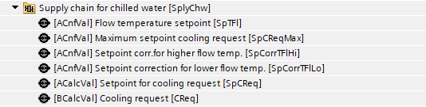
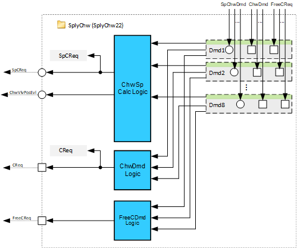
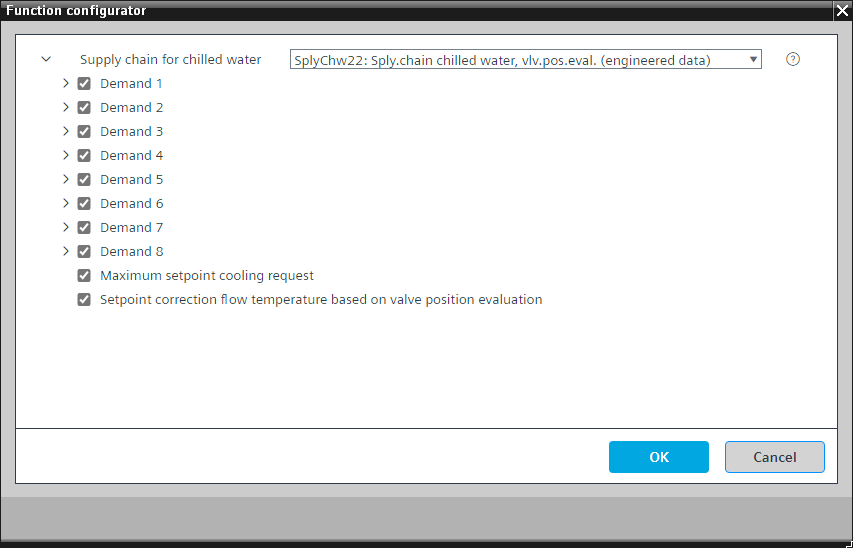

[SplyChw22] 供应链冷冻水、与其他工厂的数据交换、阀门位置评估
Program block, name / node subtype: [SplyChw22] Supply chain chilled water, data exchange with other plants, with valve position evaluation
Library hierarchy: Coordination
Family: SplyChw
项目树 | 图表 |
|---|---|
|
 |  |
Configurator


程序块存储在没有 I/Os. 的库中 使用auto-create and auto-connect函数创建 I/Os 和 /or 将它们连接到接口块，例如 R_A、CMD_B。或者，从包含库中预定义 I/Os 的文件夹中取出 I/Os，并从工厂中取出 /or，并将它们连接到接口块。
SplyChw22 将一个或多个冷冻水消耗设备（例如空气处理器）连接到冷却设备。
程序块中最重要的功能是：
- Cooling demand collection and evaluation
- Chilled water temperature setpoint calculation and its correction based on valve position evaluation of the consumers.
姓名 | 描述 | 类型 | 报警/通知类 | 趋势/类型 | |
|---|---|---|---|---|---|
SpCReq | Setpoint for cooling request | ACalcVal: Analog calculated value | N/A | N/A | |
CReq | Cooling request | BCalcVal: Binary calculated value | N/A | N/A | |
姓名 | 描述 | 类型 | 报警/通知类 | 趋势/类型 | |
|---|---|---|---|---|---|
SpCReqMax | Maximum setpoint cooling request | ACnfVal: Analog configuration value | N/A | N/A | |
Dmd(1) | Demand (1) | 图表 | N/A | N/A | |
Dmd(2) | Demand (2) | 图表 | N/A | N/A | |
Dmd(3) | Demand (3) | 图表 | N/A | N/A | |
Dmd(4) | Demand (4) | 图表 | N/A | N/A | |
Dmd(5) | Demand (5) | 图表 | N/A | N/A | |
Dmd(6) | Demand (6) | 图表 | N/A | N/A | |
Dmd(7) | Demand (7) | 图表 | N/A | N/A | |
Dmd(8) | Demand (8) | 图表 | N/A | N/A | |
描述 |
|---|
|
基于阀门位置评估的流量温度设定点修正 属于该选项的元素： Setpoint correction for lower flow temperature | ACnfVal: Analog configuration value Setpoint correction for higher flow temperature | ACnfVal: Analog configuration value Flow temperature setpoint for cooling | ACnfVal: Analog configuration value |
Cooling demand collection and evaluation
SplyChw22 接收来自消费者的二进制冷冻水需求信号 [ChwDmd1...n]，并计算冷却请求输出引脚 [CReq] 的二进制值。如果至少一个冷冻水需求信号为 True，则 [CReq] 为 True。
Chilled water temperature setpoint calculation and its correction based on valve position evaluation of the consumers
参数 [TiSplyChw22]、[TiPosVal1]、[TiVlvPosEvl]、[TiStt0] 具有默认值。
- Are ≥ 10 %
- Have no disturbances
- Are from consumers with an active chilled water demand signal
线性函数（可配置）使用 [ChwVlvPosEvl] 计算 SpCorrTFlHi 和 SpCorrTFlLo 之间的冷冻水供应温度设定点修正值：

Key
SpCorrTFlHi | Setpoint correction for higher flow temperature |
SpCorrTFlLo | Setpoint correction for lower flow temperature |
ChwVlvPosEvl | Supply chain chilled water valve position evaluation |
计算出的设定点修正值添加到基本设定点 SpTFl 中。结果是冷冻水冷却请求设定点值 [SpCReq]（图表输出引脚）。为了防止设定点异常低，图表中硬编码了 3°C 下限。
建议的设定点值 [SpCReq] 可以传送到冷却设备或其他协调器 (SplyChw23)。